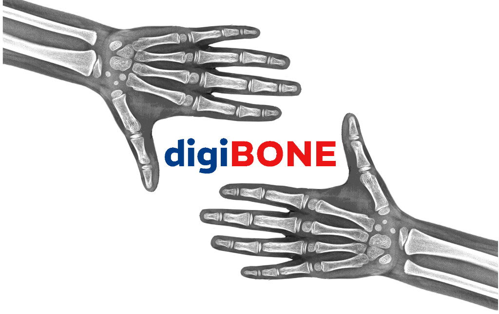

Scroll down
ABOUT & SKILLS
I am an interdisciplinary researcher utilizing computer vision techniques on 2D and 3D medical images. I bridge the gap between biology and machine learning, solving complex challenges within the medical domain.
Computer Vision & ML
Deep Learning, Convolutional Neural Networks, PyTorch
Programming/Data
Python, R, C, SQL, Java, MATLAB, Bioinformatics
Platforms & Systems
Windows, Linux Environment
EDUCATION
Indian Institute of Science Education and Research (IISER), Pune
Aug 2022 - PresentPhD Candidate in Biology
- Focus on utilizing computer vision techniques on 2D and 3D medical images to address pertinent questions and solve challenges within the medical domain.
- 1st Year Coursework CGPA: 8.2/10
- Coursework: Biostatistics, Bioinformatics, Data Science, Mathematical and Computational Biology.
Banaras Hindu University, Varanasi, U.P.
Aug 2019 - Sep 2021Masters of Science in Bioinformatics
- CGPA: 9.03/10
- Relevant Coursework: Data Analytics, Statistics, Discrete Mathematics, Probability, Database Management Systems, Programming & Machine Learning.
Barrackpore Rastraguru Surendranath College, W.B.
Jul 2016 - Jul 2019Bachelors of Science in Microbiology
- Percentage Marks: 71.25%
ACADEMIC & RESEARCH EXPERIENCE
IISER Pune
Aug 2023 - PresentGraduate Teaching Assistant
- Statistical Learning and Data Science: Taught lectures on machine learning algorithms, Learning Theory: Agnostic PAC (Probably Approximately Correct) Learning, and coding tutorials.
- Introductory Experimental Biology: Taught practical experiments such as microscopy, erythrocyte and leucocyte visualization, and genetics-related practicals.
BHU, Varanasi, U.P.
Feb 2021 - Aug 2021Master's Dissertation Project
- Developed a machine learning model in Python to classify potential inhibitors of the SARS-COV2 main protease.
- Utilized supervised learning techniques to assess drug efficacy against COVID-19.
- Employed feature selection methods to identify 16 key drug sub-structures effective in inhibiting the SARS-COV2 main protease.
- Built classification models using Support Vector Machine and Random Forest algorithms, achieving AUC scores of 0.85 and 0.91 respectively.
Office of Principal Scientific Advisor, Govt. of India / AICTE / CSIR
Jul 2020 - Oct 2020Drug Discovery Hackathon 2020 Participant
- Developed a machine learning regression-based Quantitative Structure-Property Relationship (QSPR) model correlating drug molecule structure with Caco-2 cell permeability.
- Collaborated within a 5-member team employing R programming to implement multiple linear regression, achieving robust minimum acceptable statistics.
FEATURED PROJECT
digiBONE
View GitHub Repo
- An automated tool for segmental Greulich-Pyle bone age assessment of Indian children and adolescents.
- Utilizes advanced computer vision techniques on 2D medical images to accelerate and standardize pediatric diagnostics.
PUBLICATIONS, CONFERENCES, & WORKSHOPS
Publications
- digiBONE: an automated tool for segmental Greulich-Pyle bone age assessment of Indian children and adolescents. Chakladar S, et al. Front. Endocrinol. 2026. Read
- Quantification of joint mobility limitation in adult type 1 diabetes. Phatak S, Mahadevkar P, Chaudhari KS, Chakladar S, Jain S, et al. Front Endocrinol. 2023 Nov 6;14:1238825. doi: 10.3389/fendo.2023.1238825.
Conferences
- Indian Society for Pediatric and Adolescent Endocrinology (ISPAE), 2023: Presented our lab's innovative prototype of an automated bone age assessment application developed in collaboration with clinicians from HCJMRI, Pune.
Workshops & Certificates
- Workshop on Machine Learning for Health and Disease: ICTS-TIFR, Bengaluru (Jul-Aug 2023).
- NPTEL Online Certification on R Software: IIT Kanpur (Sep-Nov 2020).
- NPTEL Online Certification on Data Mining: IIT Kharagpur (Feb-Apr 2020) — Among top 5% scorers.
- Workshop on Mathematics for Biologists: Dept of Bioinformatics, BHU (Sep 2019).